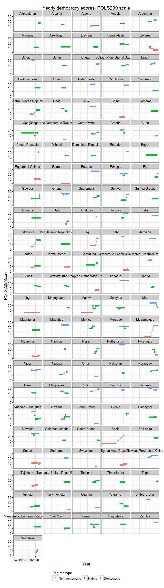
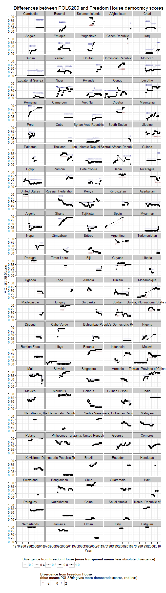

(This post will be updated as new data – late submissions – come in. Another post analysing the correlation between our regime data and corruption data will follow in the middle of the week).
(Last updated 2015-05-27 15:25:24)
We have now gathered enough data to start answering the research question you selected at the beginning of the term (seems like ages ago!). You designed a classification system in tutorials, and individually gathered data on lots of countries (119 so far to be exact). And the results are really good; your classification correlates at 0.78 with Freedom House and at 0.74 with Polity IV. This is not bad at all; Polity IV and Freedom House themselves correlate at 0.89, which is only slightly higher. Professionals do not always agree about whether a country is democratic or not. These results make me feel benevolent; perhaps I should restore some of your points!
The main version of the dataset your efforts have produced is available here. This file collects all your answers, puts them in a spreadsheet format, and calculates the “score” you gave the country. It is not straightforward to use or understand,1 so in the rest of this post, I will point out some general patterns and show you a couple of useful graphs. (There are also many things we could do with it but are too technical for us; more on these in the second post).
The first thing we can do is simply to show you the results of your classification. Most countries were rated at different time periods by two or more students; some of you chose longer periods, others chose shorter periods of time, but most chose periods of at least 4-5 years, which gives us a reasonable amount of regime data (including some transitions to democracy or to authoritarianism, since the periods chosen by you often overlapped for a given country). We can thus simply average each student rating per year and plot the results per country, showing the variation over time and space in the POLS209 “democracy score”:

Democracies are in blue, hybrid regimes are in green, and non-democratic regimes are in red in this scheme (though the tripartite division is arbitrary; we could split the scores in a different way, if you prefer). As you can see, you rated many “non-Western” countries as democratic (the word is still censored, by the way). In fact, despite the heavy reliance of this class on the Freedom House website (most of you used FH as one source, judging from your justifications), if anything you tended to be more forgiving than FH; your classifications are a bit more “democratic” than theirs.
One way of visualizing your divergences from Freedom House scores is in the graph below, which rescales your scores to the range of 0-1, in order to compare them with FH scores, also rescaled (and reversed) to fit within the interval 0-1. (We restrict ourselves here to the period 1972-2014, where FH data exists). The black lines show the freedom house scores; the colored lines show your scores. A stronger color indicates greater divergence from FH scores; blue means that your classification is more “democratic” than that of FH, while red means it is less so. Countries at the top show the most differences between the POLS209 team and Freedom House; countries at the bottom are basically invisible, since your scores are almost identical to those given by Freedom House:

Countries at the bottom tend to be clear democracies or non-democratic systems; countries at the top are more complicated, which may account for some of the differences between POLS209 and Freedom House. As usual, I cannot find differences with the degree of confidence (more confident students are no more or less likely to differ from Freedom House).
What other visualizations would you like to see? (Comparisons involving corruption data in the next post, later this week).
All code for this post is available in this repository. If you are technically minded and want to learn some more, you might wish to download the R programming language and RStudio and play with it; I can help you if you are interested. (If you want to replicate the graphs and correlations above, you will also need a spreadsheet with the Freedom House scores, available here.)
If you don’t understand the spreadsheet, don’t worry! I’ll do most of the analysis for you here, and you can ask questions in the comments below this post.↩